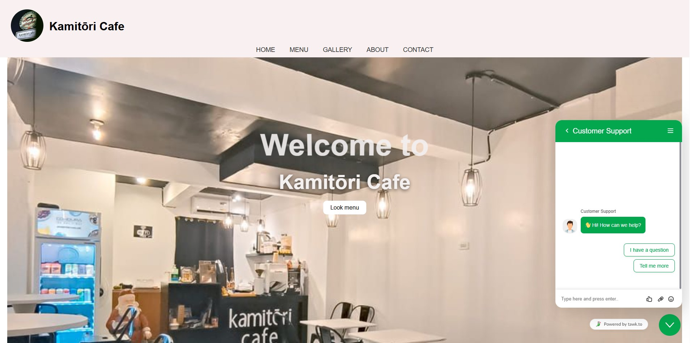
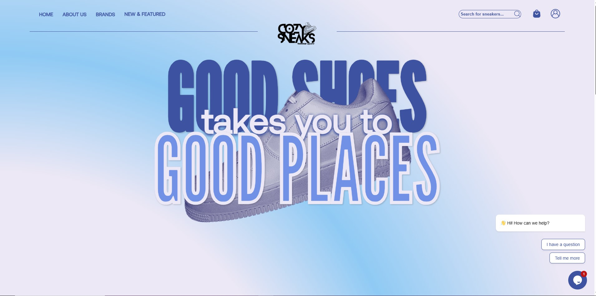
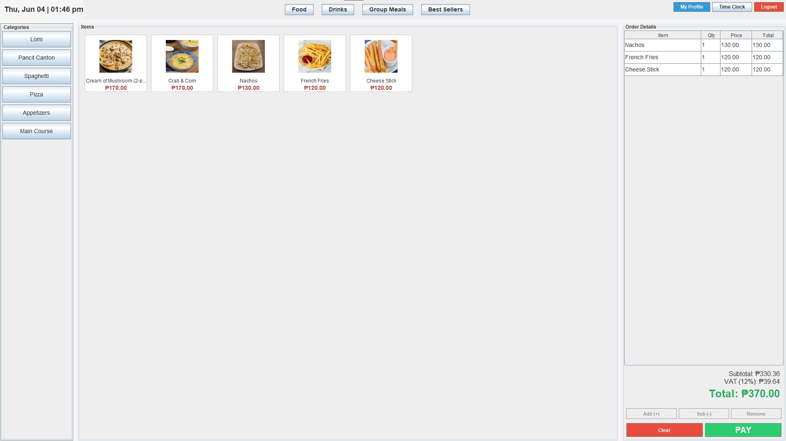
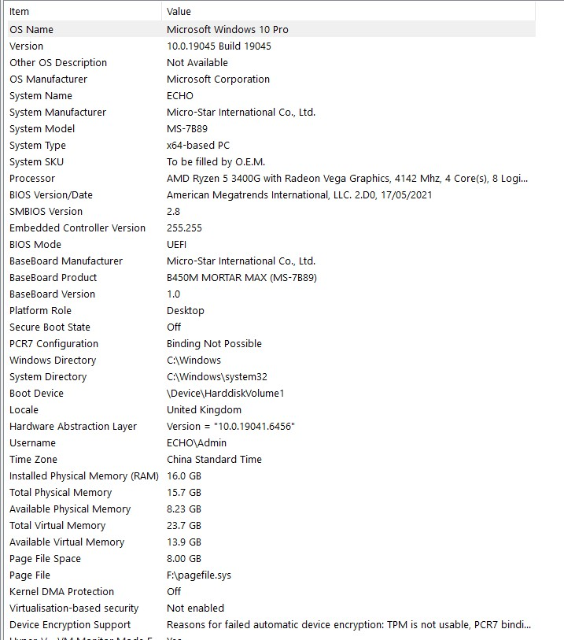

I am a dedicated Information Technology student at Our Lady of Fatima University. I specialize in full-stack web development, database management, network operations, and data science. Passionate about solving complex technical problems and building responsive applications.
Angono, Rizal, Philippines | +63 0966 761 0003
Academic & Professional Experience

Role: Front-End Web Designer & Developer
Designed user-friendly interfaces integrating product displays and order sections. Collaborated with a team to align web design with marketing goals. Nominated for the Legacy 2024 Award.

Role: Full-Stack E-commerce Developer
Developed a complete e-commerce website for sneakers. Implemented secure login/signup systems, add-to-cart functionality, and a fully functional database-driven admin dashboard.

Role: Full-Stack Developer
Built a full-stack point of sale system featuring order management, inventory tracking, and sales reporting. Successfully integrated secure hardware biometric fingerprint scanners for automated, tamper-proof employee attendance logging.
Technical Proficiency
Continuous Learning & Growth
Ready to Deploy
I maintain a highly optimized, dedicated home workspace to ensure seamless collaboration, uninterrupted full-stack development, and efficient database management. My setup guarantees stable virtual meetings and fast code deployment.
High-speed, stable fiber connection ensuring zero downtime during critical tasks.

Robust hardware configured for virtualization, local server hosting, and heavy data processing.